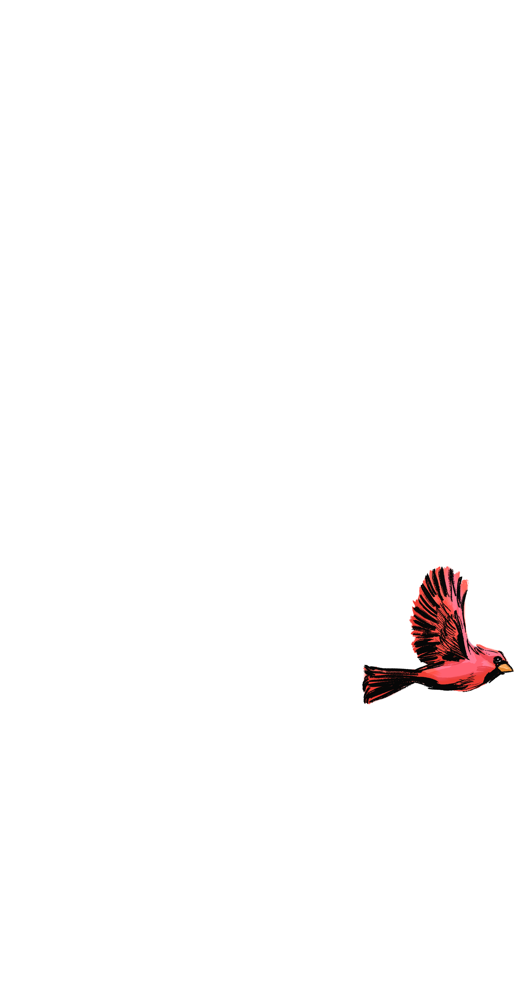
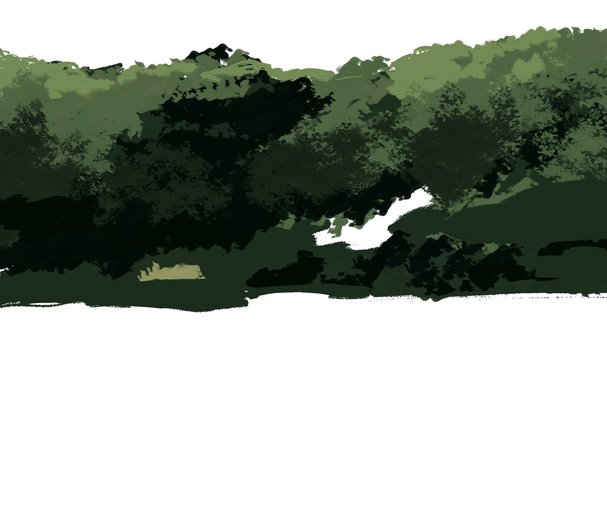

<!DOCTYPE html>

<html>
    <head>

        <meta charset="utf-8">
        <meta http-equiv="X-UA-Compatible" content="IE=edge">
        <meta name="viewport" content="width=device-width, initial-scale=1">

        <link rel="stylesheet" href="https://cdn.jsdelivr.net/npm/bootstrap@3.4.1/dist/css/bootstrap.min.css" integrity="sha384-HSMxcRTRxnN+Bdg0JdbxYKrThecOKuH5zCYotlSAcp1+c8xmyTe9GYg1l9a69psu" crossorigin="anonymous">
        <link rel="stylesheet" href="css/index.css">
        
        <script src="src/parallax.min.js"></script>
        <script src="https://code.jquery.com/jquery-1.12.4.min.js" integrity="sha384-nvAa0+6Qg9clwYCGGPpDQLVpLNn0fRaROjHqs13t4Ggj3Ez50XnGQqc/r8MhnRDZ" crossorigin="anonymous"></script>
        <script src="https://cdn.jsdelivr.net/npm/bootstrap@3.4.1/dist/js/bootstrap.min.js" integrity="sha384-aJ21OjlMXNL5UyIl/XNwTMqvzeRMZH2w8c5cRVpzpU8Y5bApTppSuUkhZXN0VxHd" crossorigin="anonymous"></script>
        <script src="https://cdnjs.cloudflare.com/ajax/libs/bodymovin/5.9.6/lottie.min.js" integrity="sha512-yAr4fN9WZH6hESbOwoFZGtSgOP+LSZbs/JeoDr02pOX4yUFfI++qC9YwIQXIGffhnzliykJtdWTV/v3PxSz8aw==" crossorigin="anonymous" referrerpolicy="no-referrer"></script>

        <script src="src/index.js"></script>
        <title> Parallax </title>

        <link href="https://fonts.googleapis.com/css?family=Merriweather|Muli:300" rel="stylesheet">
    </head>
</html>

<body>

    <div class="centered-container container-fluid">

        <div class="title-section-container row">
            <div class="title-text">
                <div class="parallax-scene" id="introScene">
                    <div class="p_layer" data-depth=".4">  </div>
                    <div class="p_layer" data-depth=".6">  </div>
                </div>
            </div>
            <div class="subtitle-text">
                <p class="subtitle-intro-text fade-in">
                    Every year, as the temperatures start to climb in the spring, our region plays host to over 200 species of birds that are moving north after spending winter in South America. While some species are only passing through on their way further north to Canada or even the Arctic, others will be building nests right here in the Washington region as they breed throughout the summer. From patches of grasslands to forests and rivers, the city’s parks offer a wide range of habitats for resident and migratory birds all year long.
                </p>
            </div>
        </div>
   
        <div class="bird-container row">
            <div class="clouds" id="clouds">                              </div>
            <div class="bird intro_bird1" id="bird1">                              </div>
            <div class="bird intro_bird2" id="bird2">                              </div>
            <div class="bird intro_bird3" id="bird3">                              </div>
            <div class="bird intro_bird4" id="bird4">                              </div>
            <div class="bird intro_bird5" id="bird5">                              </div>
            <div class="bird intro_bird6" id="bird6">                              </div>
            <div class="bird intro_bird7" id="bird7">                              </div>
        </div>

    
        <div class="parallax-scene-container row" id="parallax-scene-container-1">
            <div class="row-container">

                <div class="scene row" id="scene1">
                    <div class="sidebyside-flex" id="scene1-flex">
                        <div class="scene-container .col-xs-12 .col-md-8" id="parallax-scene-container-3">
                            <div class="parallax-scene" id="parallax-scene-3">
                                <div class="p_layer" data-depth="0.1">  </div>
                                <div class="p_layer" data-depth="0.2">  </div>
                                <div class="p_layer" data-depth="0.3">  </div>
                                <div class="p_layer" data-depth="0.4">  </div>
                                <div class="p_layer" data-depth="0.1">  </div>
                            </div>   
                        </div>
                       
                    </div>
                    <div class="scene-text .col-xs-6 .col-md-4" id="scene1-text">
                        <div class="subcontainer-text fade-in">
                            <p class="splashtext">
                                Theodore Roosevelt Island
                            </p>
                            <p class="detail-text">
                                Given the density of the surrounding urban development, the forested area acts as a crucial focal point for bird life, particularly during migration. The site provides excellent winter viewing habitat.
                            </p>
                        </div>
                    </div>
                    <div class="overlay_container" id="animation1">
                        <div class="overlay_content" id="animation-content1"></div>
                    </div>
                </div>
    
                <div class="scene sceneflip row" id="scene2">
                    <div class="sidebyside-flex" id="scene2-flex"> 
                        <div class="scene-container .col-xs-12 .col-md-8"  id="parallax-scene-container-2">
                            <div class="parallax-scene" id="parallax-scene-2">
                                <div class="p_layer" data-depth="0.1">   </div>
                                <div class="p_layer" data-depth="0.2">   </div>
                                <div class="p_layer" data-depth="0.3">   </div>
                                <div class="p_layer" data-depth="0.5">   </div>
                                <div class="p_layer" data-depth="0.8">   </div>
                                <div class="p_layer" data-depth="0.85">  </div>
                                <div class="p_layer" data-depth="0.1">   </div>
                            </div>  
                        </div>
                    </div>
                    <div class="scene-text .col-xs-6 .col-md-4">
                        <div class="subcontainer-text fade-in">
                            <p class="splashtext">
                                The National Arboretum
                            </p>
                            <p class="detail-text">
                                The National Arboretum was established by Congress in 1927 as part of the U.S. Agriculture Department. Ninety-four years later, scientists still work in its greenhouses and open fields, while generations of Washingtonians enjoy it as a place to sit under trees with friends or take kids to ride bikes. 
    
                                It's known as a good place to look for hawks, falcons, and owls. 
                            </p>
                        </div>
                    </div>
                    <div class="overlay_container" id="animation2">
                        <div class="overlay_content" id="animation-content2"></div>
                    </div>
                </div>
                
                <div class="scene row" id="scene3">
                    <div class="sidebyside-flex" id="scene3">
                        <div class="scene-container .col-xs-12 .col-md-8">
                            <div class="parallax-scene" id="parallax-scene-1">
                                <div class="p_layer" data-depth="0.1">  </div>
                                <div class="p_layer" data-depth="0.2">  </div>
                                <div class="p_layer" data-depth="0.3">  </div>
                                <div class="p_layer" data-depth="0.4">  </div>
                                <div class="p_layer" data-depth="0.5">  </div>
                                <div class="p_layer" data-depth="0.6">  </div>
                                <div class="p_layer" data-depth="0.7">  </div>
                                <div class="p_layer" data-depth="0.8">  </div>
                                <div class="p_layer" data-depth="0.0">  </div>
                            </div>   
                        </div>
                    </div>
                    <div class="scene-text .col-xs-6 .col-md-4">
                        <div class="subcontainer-text fade-in">
                            <p class="splashtext">
                                Kenilworth Park and Aquatic Gardens
                            </p>
                            <p class="detail-text">
                                Kenilworth Park and Aquatic Gardens is a twin National Park Service site. Over 250 different species of birds have been spotted! It also is a year-round home for many non-migratory birds.
                            </p>
                        </div>
                    </div>

                    <div class="overlay_container" id="animation3">
                        <div class="overlay_content" id="animation-content3"></div>
                    </div>
                </div>
            </div>
        </div>
    </div>
   
   

    
    <!-- Scripts -->
    <script src="./src/bundled-parallax.js"></script>
    <script>

    var introScene = document.getElementById('introScene');
    var parallaxIntroScene = new Parallax(introScene);

    var scene1 = document.getElementById('parallax-scene-1');
    var parallax1 = new Parallax(scene1);

    var scene2 = document.getElementById('parallax-scene-2');
    var parallax2 = new Parallax(scene2);

    var scene3 = document.getElementById('parallax-scene-3');
    var parallax3 = new Parallax(scene3);

    const animationMap = { 
        animation1: {
            assetPath: 'assets/Circle_heron.json',
            loaded: false,
        },
        animation2: {
            assetPath: 'assets/Circle_owl.json',
            loaded: false,
        },
        animation3: {
            assetPath: 'assets/Circle_pintail.json',
            loaded: false
        }
    }

    function fadeIn() {
        var fadeInSections = document.querySelectorAll(".fade-in");
        for (var i = 0; i < fadeInSections.length; i++) {
            var currSection = fadeInSections[i];
            var windowHeight = window.innerHeight;
            var elementTop = currSection.getBoundingClientRect().top;
            var elementVisible = 150;
            if (elementTop < windowHeight - elementVisible) { 
                currSection.classList.add("is-visible");
            } else {
                currSection.classList.remove("is-visible");
            }
        }
    }

    var animation1, animation2, animation3;

    function triggerAnimation() {
        var animatedSections = document.querySelectorAll(".overlay_container");
        for (var i = 0; i < animatedSections.length; i++) {
            var currSection = animatedSections[i];
            var docViewTop = $(window).scrollTop();
            var docViewBottom = docViewTop + $(window).height();
            var elemTop = $(currSection).offset().top;
            if ((elemTop <= docViewBottom) && (elemTop >= docViewTop) && !animationMap[currSection.id].loaded) {
                lottie.loadAnimation({
                    container: document.getElementById(currSection.id),
                    path: animationMap[currSection.id].assetPath,
                    renderer: 'svg',
                    loop: false,
                    autoplay: true,
                    name: currSection.id
                });            
                animationMap[currSection.id].loaded = true;
            }
        }
    }

    window.addEventListener("scroll", fadeIn);
    window.addEventListener("scroll", triggerAnimation);
    fadeIn();
    triggerAnimation();

    </script>

</body>


